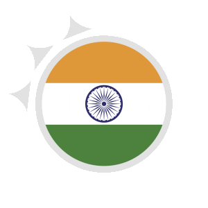

Indie
Xmas w Indiach
Obchody są barwne, pełne tradycji i radości, łącząc zarówno aspekty religijne, jak i kulturowe. W wielu regionach Indii, szczególnie tam, gdzie społeczność chrześcijańska jest liczniejsza, dni poprzedzające Boże Narodzenie są pełne przygotowań. Wiele kościołów i domów jest ozdabianych lampkami, girlandami, a na ulicach można zobaczyć różnorodne dekoracje.
Boże Narodzenie w Indiach to także czas skupienia na tradycyjnych obrzędach religijnych. Wieczór Wigilii, zwany "Bada Din" (Wielkim Dniem), jest czasem mszy świątecznych w kościołach, gdzie wierni gromadzą się, aby uczcić narodziny Jezusa Chrystusa. Po mszach wielu ludzi wraca do domów, by spędzić czas z rodziną.
Jednym z charakterystycznych aspektów obchodów Bożego Narodzenia w Indiach jest wspólnota. Nie tylko chrześcijanie, ale również przedstawiciele innych wspólnot religijnych, są często zaangażowani w celebrowanie tego czasu. Święta są okazją do wymiany upominków, odwiedzin w domach przyjaciół i sąsiadów, co tworzy atmosferę wspólnej radości i zrozumienia.
Tradycje
W Indiach Boże Narodzenie jest obchodzone z uroczystością, łącząc zarówno elementy religijne, jak i kulturowe, niektórymi z tradycji są:
- Msze Świąteczne- wieczór Wigilii i dzień Bożego Narodzenia są obchodzone poprzez uczestnictwo w mszach świątecznych w kościołach. Modlitwy, kolędy i ceremonie religijne odgrywają ważną rolę w tych uroczystościach.
- Muzyka i Tańce- organizowane są koncerty, przedstawienia i tańce związane z okresem Bożego Narodzenia. Różnorodne przedstawienia, zarówno tradycyjne, jak i nowoczesne, są organizowane, by uczcić te święta.
- Dekoracje- dekorują swoje domy, kościoły i miejsca publiczne. Choinki, lampki, girlandy i inne ozdoby tworzą kolorowy i radosny nastrój. Często używa się baniek, kwiatów i tradycyjnych indyjskich wzorów.
- Prezenty i Wymiana Upominków- Boże Narodzenie w Indiach to czas obdarowywania się prezentami. Rodziny i przyjaciele wymieniają prezenty, co dodaje radości i współdzielenia w tym wyjątkowym okresie.
To tylko kilka tradycji odzwierciedlających różnorodność kulturową i religijną Indii, gdzie święta Bożego Narodzenia są czasem wspólnej radości, rodzinnego spotkania i celebracji zarówno dla chrześcijan, jak i innych wspólnot.
Potrawy
Kuchnia w Indiach jest niesamowicie zróżnicowana i zależy od regionu, kultury i preferencji kulinarnej danej społeczności, niektórymi z dań są:
- Biryani- aromatyczne danie z ryżu, zazwyczaj gotowane z mięsem (indykiem, jagnięciną lub kurczakiem), przyprawami i ziołami.
- Curry- zazwyczaj przygotowywanych z różnorodnych składników - warzyw, mięsa lub ryb. Mogą być ostre, łagodne, a ich smak zależy od regionu, w którym są przygotowywane.
- Raita- odzaj jogurtu wymieszanego z warzywami, takimi jak ogórki, pomidory czy cebula. Stanowi doskonałe uzupełnienie dla pikantnych potraw.
- Gulab Jamun- słodkie kulki przygotowane z mąki mlecznej w syropie. To jedno z najbardziej ulubionych deserów w Indiach, często spożywane podczas specjalnych okazji.
- Halwa- to gęsty deser z semoliny, gotowany z masłem, orzechami i skrobią. Posiada wiele odmian, w zależności od regionu, i często jest podawany jako słodka przekąska.
- Masala Chai- to herbatka parzona z czarnego herbaty z dodatkiem przypraw, takich jak cynamon, kardamon, goździki i imbir.
Te potrawy są jednymi z wielu, które mogą być obecne na świątecznym stole w Indiach, gdzie różnorodność kulinarna oferuje szeroki wachlarz smaków i przypraw, tworząc wyjątkowe doznania kulinarne.